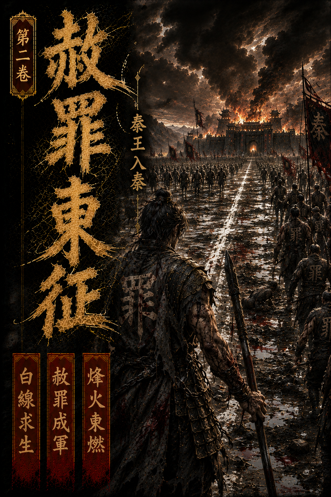

第1章：白線求生
章邯東出第七日，赦罪軍第一次真正像一支軍。
天還未亮，前營便已起號。那號聲不是關中舊軍慣用的金音，反倒先由一段低沉楚調起勢，再被戰鼓硬生生壓成軍令。唱的人是個原本在刑徒營裡最不起眼的楚卒，臉瘦，眼卻亮，像還不肯讓自己死成一捧灰。
旁邊老秦卒聽得直皺眉。
「秦軍唱楚調，晦氣。」
那楚卒頭也不回，只道：「能叫人醒的就是好調。」
旁邊幾個人本來要罵，最後竟都沒罵出口。
因為今天要打的，不是什麼硬寨大城，而是栗城外一座押著糧、也押著人心的轉運寨。
天將明時，章邯已立馬於中軍高處。
他沒有急著攻。
真正要破這座寨，不在於先燒牆，先砍人，而在於先讓裡頭那些被裹挾、被逼反、又未必真想死的人，親眼看見「降可活」不是假話。
所以章邯先命人把昨夜擒來的十餘名叛卒帶上來。
又命人在陣前百步，劃一道白線。
白灰落地時，許多人心裡都跟著顫了一下。因為大家都知道，今天若章邯說了不算，這一線就不是生路，而是笑話。
章邯抬聲。
「棄兵過線者生。」
「曾焚城、劫鄉、殺降者不赦。」
「其餘人，過線即活。」
說完，他沒有再補一句漂亮話，只讓人解開那十幾個俘虜的腳鐐，給他們每人一碗水。
第一個喝水的人，手抖得差點把碗打翻。
他看了看章邯，又看了看白線外那片空地，像怎麼都不敢相信自己真能走。
章邯只說了一個字。
「去。」
那人終於咬牙，跨過了白線。
前軍不動，弩手不舉。
他越走越快，最後幾乎是跌著撲進了後軍留出的生口裡，整個人跪在地上，哭得像要把肺都吐出來。
栗城寨上先是死寂，接著便亂了。
有人大罵秦軍使詐，有人卻已本能往後縮。幾名想死守的頭目剛拔刀喝令，後方弩手便齊齊抬臂，一輪極短、極狠的齊射，把最會鼓動人送死的兩人當場釘在寨牆上。
這不是亂殺。
這是挑心。
章邯要讓所有人看明白，如今秦軍不是見人就斬，而是先斬最不准別人活的那幾個。
果然，不到一炷香，寨牆上已有人先把兵器丟了下來。
一個，兩個，十個。
「真不殺！」
不知誰先喊出這一句。
這一句比攻城錘還有力，直接把整座栗城糧寨最後那點死撐著的氣打裂了。
章邯直到人心真正鬆動，才下第二道命。
「左營鉤索上前，封寨門。」
「前軍緩進。」
「擅焚糧者，射。」
赦罪軍這才動。
不是猛撲，而是一張順著人心裂口慢慢收緊的鐵網。那些原本最像散沙的刑徒兵，在看見白線真能活人之後，眼裡竟重新泛起血色。
他們忽然明白，自己往前不是替咸陽去送死。
是替自己把那條路踩實。
半個時辰後，栗城糧寨破。
焚糧者斬。
殺降者斬。
餘眾解兵編後軍，分糧給水。
章邯入寨時，四下哭聲比血腥更重。很多剛剛還舉旗說要亡秦的人，如今抱著頭蹲在牆角，像終於從一場燒得太久的惡夢裡醒了，卻還不知道自己醒來之後能算什麼。
章邯沒有安撫，只命書吏逐名記錄。
一邊是活。
一邊是死。
從今日起，赦罪軍的規矩，得先讓天下怕，也得讓天下信。